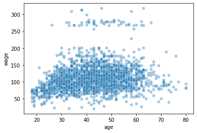

%matplotlib inline
Polynomial and Spline interpolation¶
This tutorial is based on a scikit learn documentation provided by Mathieu Blondel, Jake Vanderplas, Christian Lorentzen and Malte Londschien
Prerequisites:
Use
conda update --allto make sure you have the latest release of scikit learn. Afterwards, restart your kernel.
import pandas as pd
# data preparation
df = pd.read_csv('https://raw.githubusercontent.com/kirenz/datasets/master/wage.csv')
X = df[['age']]
y = df[['wage']]
# train test split
from sklearn.model_selection import train_test_split
X_train, X_test, y_train, y_test = train_test_split(X, y, test_size=0.3, random_state = 1)
import seaborn as sns
sns.scatterplot(x=X_train['age'], y=y_train['wage'], alpha=0.4);

We use a pipeline to add non-linear features to a ridge regression model.
from sklearn.linear_model import Ridge
from sklearn.preprocessing import PolynomialFeatures, SplineTransformer
from sklearn.pipeline import make_pipeline
# use polynomial features with degree 3
model = make_pipeline(PolynomialFeatures(degree=3),
Ridge(alpha=1))
model.fit(X_train, y_train)
y_pred = model.predict(X_train)
# B-spline
model = make_pipeline(SplineTransformer(n_knots=4, degree=3),
Ridge(alpha=1))
model.fit(X_train, y_train)
y_pred = model.predict(X_train)